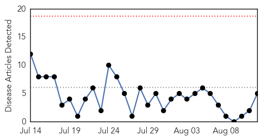
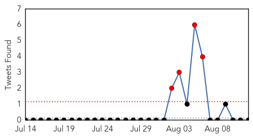
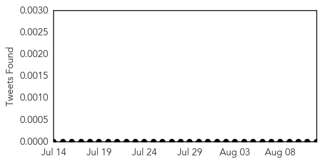

Dengue Fever
30-Day Web Trend
0 alerts, 0 warnings

30-Day Twitter Trend
4 alerts, 0 warnings

Article Locations

Article Confidences

Top Articles:
- 0.975
- Health Minister says everyone, including public, must play role to prevent outbreaks - Community
- 0.973
- International researchers explore disease modeling techniques at ASU conference
- 0.948
- National Health Profile 2013 findings: Delhi shows surge in dengue cases
- 0.686
- Selangor dengue hotspots down - Nation
- 0.594
- War against dengue in Selangor starting to see good results: Muhyiddin
Top Tweets:
-
No tweets found for Aug 12, 2014
Chikungunya
30-Day Web Trend
1 alerts, 0 warnings

30-Day Twitter Trend
0 alerts, 0 warnings

Article Locations
Article Confidences

Top Articles:
- 0.996
- Chikungunya virus detected in Argentina
- 0.992
- Asian Tiger Mosquito Could Expand Painful Caribbean Virus into U.S.
- 0.962
- Mississippi reports 1st West Nile virus death in Yazoo County, additional imported chikungunya case
- 0.888
- First WNV Death this Year in Mississippi
- 0.843
- CDC Official: FL Lags in HPV Vaccination
- 0.842
- CDC in Tampa to urge more HPV vaccination
- 0.722
- Health Ministry says case at UWI not confirmed as chikungunya
Top Tweets:
-
No tweets found for Aug 12, 2014